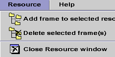
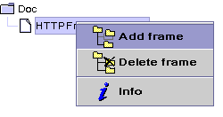
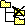

The Resource Editor allows you to edit the resource properties and to add, remove or configure the resource frames.
This document has the following sections:

|
The Frames Tree works like the Resource Tree except that double clicking on a expands orcollapse the node instead of displaying the Resource Editor. When a resource is selected on the Frames Tree, the Resource Editor display its Attributes Editor. |
|  |  |
Those Menus have the followings items:

Add a frame to the selected resource (or frame). If there is no resource selected, do nothing.

Delete the selected resource/frames. If there is no resources selected, do nothing. If you are not allowed to delete the selected resource, display an error dialog.

Popup a mini HTML browser that point to the "Resource Reference Documentation" of the selected resource/frame. If there is no selected resource, do nothing.


The Attributes Editor allows you to edit the resource/frame properties like "Indexer", "Extensible", "Negotiable"... Each attribute has its own graphical editor.
|
| Commit your changes to the server. If you don't commit your changes, you will loose them. |
|
| Reset your changes (if not committed). |
So, now you are able to configure the Jigsaw Resources.